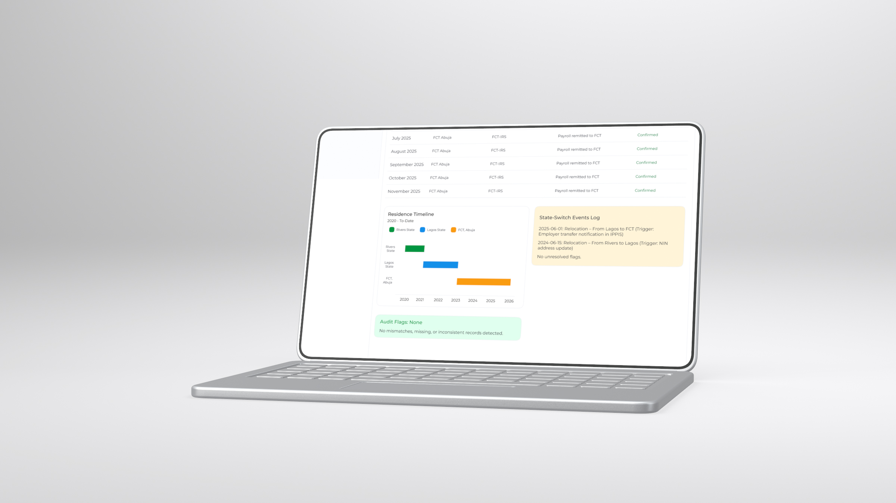
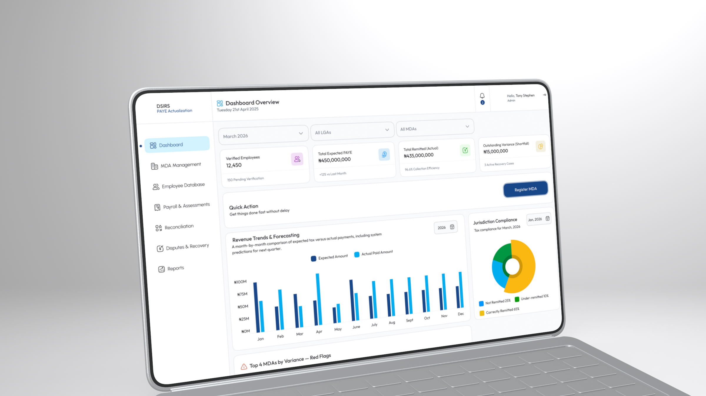

Disconnected Data Silos
Taxpayer profiles, corporate filings, and payment receipts lived in separate modules, forcing staff to cross-reference IDs manually.
Civic Tech · Tax Intelligence Interface
Product Designer · 4Core Integrated Services
2026
State revenue officers often have to search across multiple disconnected databases just to verify a single taxpayer's compliance history. I designed the Omega Search Interface to bring individual and corporate tax records, payment histories, and identity verification into one fast, unified search workspace.

The design started with a practical operational need: how can revenue officers locate accurate taxpayer data in seconds without getting overwhelmed by dense database tables?
Taxpayer profiles, corporate filings, and payment receipts lived in separate modules, forcing staff to cross-reference IDs manually.
Officers needed a way to narrow down thousands of records by Tax ID, phone number, BVN, or registration status without page reloads.
Once a record was opened, key compliance flags and outstanding liabilities were buried inside cluttered spreadsheet rows.
I structured the interface around a single smart search bar supported by instant filter pills and a structured profile drawer that highlights compliance status first.
Allow staff to search by name, TIN, phone number, or company registration from a single input field with live query suggestions.
Show essential identity and tax status badges in the initial result row before opening the full assessment breakdown.
Use clear tabular spacing and high-contrast status pills so numbers, dates, and tax IDs never blur together during long shifts.
A look at the core search states, active filter drawers, and unified taxpayer profile layouts designed for internal revenue operations.
.jpg)

Design Outcome
The Omega Search Interface replaces fragmented database lookups with a single, predictable search experience. By surfacing identity verification and compliance status at a glance, revenue officers can review taxpayer records and resolve inquiries with greater speed and confidence.

An enterprise revenue intelligence and compliance dashboard.
View Case Study
A dual-sided web platform for monthly rent, roommate matching, and property management.
View Case Study